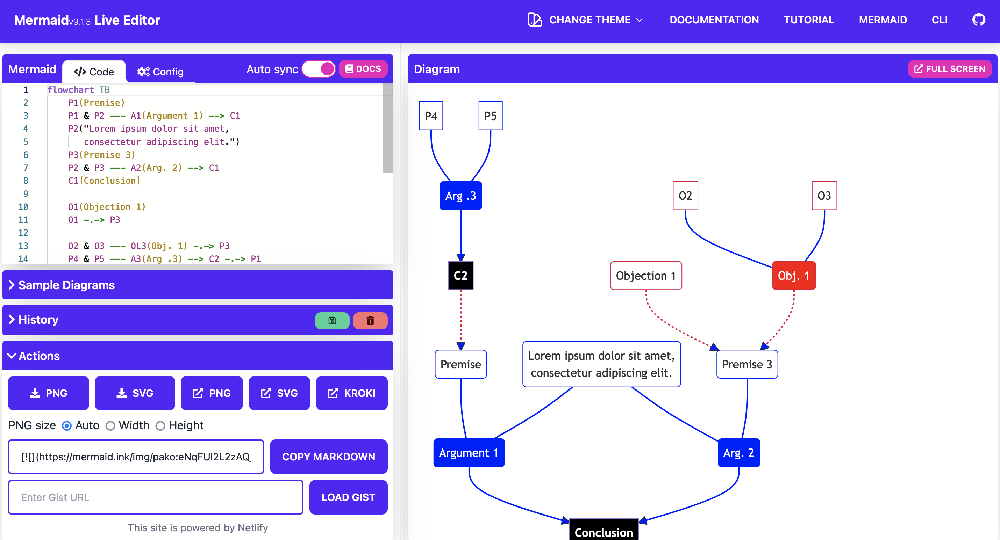
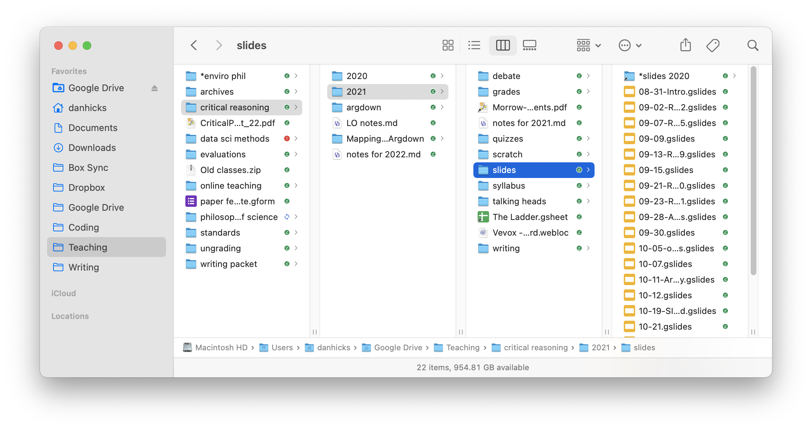
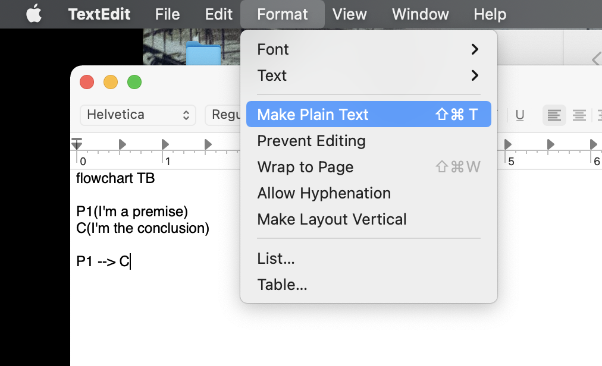
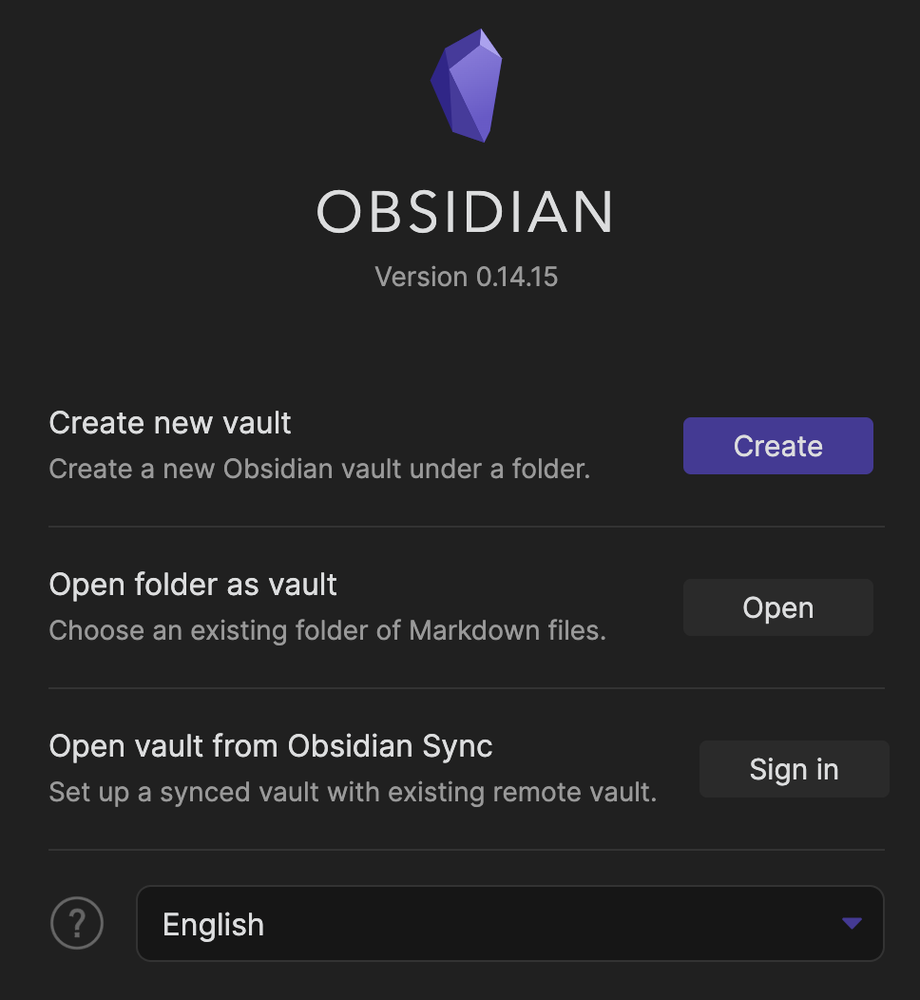
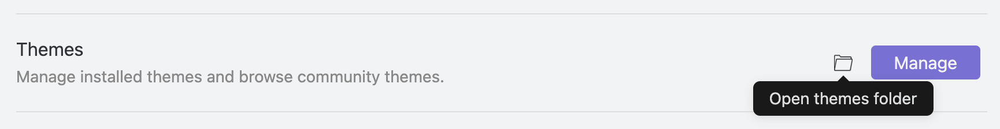
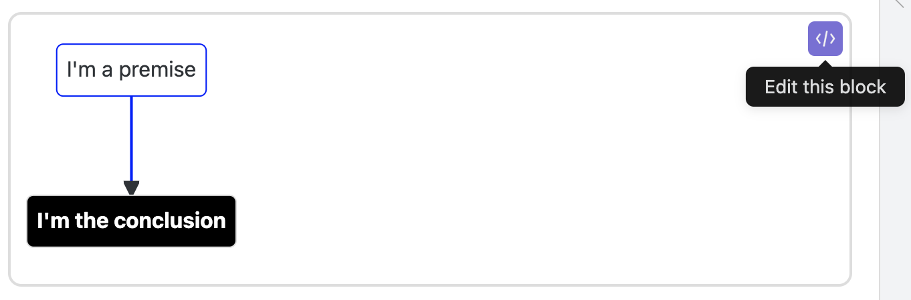

Show the code
flowchart TB
P1(I'm a premise)
C(I'm the conclusion)
P1 --> C
flowchart TB P1(I'm a premise) C(I'm the conclusion) P1 --> C
Mermaid is software designed to turn pieces of text into various kinds of diagrams. We’ll use it to create argument maps, visual representations of the structure of an argument or debate. This page has instructions for two ways of setting up this software: you can use a website called Mermaid Live, or you can download and install notetaking software called Obsidian.
Both options for using Mermaid are completely free, and either one will work to generate argument maps for this course. Mermaid Live doesn’t require any setup — you just open up a website and start typing — but has very limited functionality for saving your work. Using Obsidian requires you to download and install some software on your computer. It’s easy to use Obsidian to save your argument maps; but the software hasn’t been vetted by our campus IT office. That means there’s a security risk installing this software.
Do not store any sensitive information in Obsidian.
You don’t need to download or install anything to use Mermaid Live: simply open a web browser to https://mermaid.live, and you should see something like Figure 2.1. Since you’ll be creating argument maps pretty regularly in this class, you’ll probably want to bookmark that link.

We’ll be focusing on the text pane (left) and preview pane (right). For now you can minimize the actions pane. Click anywhere in the text pane, hit ⌘+a (Control+a on Windows) to select all, then hit backspace or delete to clear out whatever default demo text Mermaid has for you. Type the following:
Click “Show the code” to show the code to create this argument map
flowchart TB
P1(I'm a premise)
C(I'm the conclusion)
P1 --> C
flowchart TB P1(I'm a premise) C(I'm the conclusion) P1 --> C
Except, the colors will probably be different. This is because I’m using a special theme for argument maps, with highlighting for premises, conclusions, and objections. Find the Config tab, just above the code box. Clear out that tab, and copy and paste the following:
{
"themeCSS": "#Argument rect {stroke:transparent;fill#e5e5e5!important;} #Argument span {color:transparent;} .edgeLabel {color:#888; font-size:0.9em; margin-right:3px} .edgeLabel i {color:crimson!important;} .edge-pattern-dotted {stroke:crimson!important;} .edge-pattern-solid {stroke:blue!important;} #flowchart-pointEnd {fill:blue;} g rect {fill:white!important;} g[id*='P'] * {stroke:blue!important;fill:white!important;} g[id*='O'] * {stroke:crimson!important; } g[id*='OL'] * {color:white!important;fill:red!important;} g[id*='A'] * {stroke:blue!important;fill:blue!important;color:white!important;} g[id*='C'] * {fill:black!important;color:white!important;font-weight:bold;}"
}Mermaid Live doesn’t have a sense of different “documents,” so when you delete a previous map to create a new one the theming in Config should stay the same. If your theming gets messed up somehow, you can try the History panel or just copy-and-paste the block up above.
Once you’ve created a map, bring up the “action” pane and hit the PNG button to download an image file that you can turn in with a quiz or other assignment.
Unfortunately, saving the text/source code for a Mermaid Live diagram is a little more complicated. First we need to make sure you understand how your computer thinks about files and where they live.
If you use your computer primarily through free-text search boxes — just type in a word or phrase and scroll through the results — you might not be used to thinking about how your computer is actually organized. One side effect of Mermaid Live is that you’ll need to be deliberate about where your save your argument maps.
Your computer is organized like a physical filing cabinet, with drawers containing folders containing (paper) files. (Except the drawers are also called folders, and you can have folders inside of folders inside of folders inside of folders.) Every file on your computer lives in its particular folder, and everything containing files is a folder. This includes your desktop, which is a representation of a special folder tied to your user account on your computer. Apps are also collections of files organized together into folders; installing an app means copying that folder structure into certain places on your device and configuring the operating system to interact with the app’s files. All computers are organized like this, including your phone, a smartwatch, an Alexa or Siri, a Ring doorbell, etc.
Figure 2.2 shows you how I keep all the different files for our class organized into a collection of folders, as viewed using Mac OS’s Finder app in column mode. (Windows has a similar app called File Explorer.) The Teaching folder contains everything related to all of the classes I’ve taught, past and present. critical reasoning is dedicated to this specific class, with separate folders for each year. Inside I have further folders, for things like quizzes, the syllabus, writing assignments, and final grades. The slides folder contains all of the lecture slides. At the bottom of the window, I have Finder configured to show the path, or the location of the particular folder or file being highlighted. The path starts with my laptop’s hard drive (this might look like C: on Windows), then the Users folder. The Users folder contains files specific to each account on this computer. There’s only one user account on my laptop, danhicks, but some systems — like our campus email server — will have thousands of user accounts. Imagine how many user folders must be in the Gmail and Facebook servers.

Inside my user folder, danhicks, is a specific folder that I sync to the cloud using Google Drive. All of my teaching files are contained in this folder, so that they’re synced automatically. I also backup my files to an external hard drive using the Mac app Time Machine, plus the cloud service Backblaze. Triple protection in case something happens to my computer! (The “cloud” is really just physical computers located somewhere else, usually in giant warehouse-like buildings near cheap sources of electricity.)
Thanks to fast search software, we’ve gotten used to not having to interact with files and folder organization directly in a lot of cases. I don’t need to know exactly where a certain form is located on the campus website; a web search will turn it up in a few seconds. But deliberately organizing your own files into folders is important. For one thing, it makes it much easier to find related files, especially files with similar names or content. I’ve taught a lot of classes over the last 15+ years. So if I’m looking for the syllabus for the Fall 2020 version of Critical Reasoning, a search for syllabus is going to turn up a lot of results. It’s much faster to go to the folder for Critical Reasoning, then Fall 2020, and then the syllabus folder. Then, if I’m looking at that syllabus and want to look up the writing assignment I used in that course, I don’t need to remember exactly what I called the writing assignment file or what keywords might bring it up. I just click a couple of times to open the folder for the writing assignment.
There’s also a technical reason for not leaving all of your files on your desktop. Your computer assumes that files on your desktop are important and frequently accessed. So it keeps a kind of pre-loaded copy of the file in memory, so that it can open the file quickly whenever you might need it. Having hundreds or even thousands of files on your desktop can seriously slow down your computer.
The History pane in Mermaid can be used to save your history, as you create and edit argument maps. But it doesn’t have distinct files or maps, and you can’t give the saves meaningful names.
You’ll need to manually save your work by copying and pasting to a file on your computer.
Before you save your work for the first time, create a designated folder for all of the work for this course. I’m going to call this the course folder. The Documents folder on your computer is a good place to do this. If you don’t know how to find your Documents folder and create a new folder there, your instructor and TA can help.
Once you’ve created the course folder, follow these steps to save a new argument map. Try them out with the example you typed in to the text pane a few minutes ago.
You can use any plaintext editor of your choice. But Microsoft Word and Google Docs won’t work.
Create a new file, and copy and paste the argument map text from Mermaid Live into the new file.
On a Mac: You may need to go to Format -> Make Plain Text. See Figure 2.3.

Hit ⌘+s (Mac) or Control+s (Windows) to bring up the save dialog.
When you want to open up a saved argument map, you’ll need to follow these steps.
Obsidian is notetaking and knowledge base software. If you’ve used the website Notion, it’s somewhat similar. Obsidian has built-in support for Mermaid. Creating argument maps is just a little more complicated than using Mermaid Live, but as an app on your computer it’s simple to save and open argument maps.
If you’re going with this option, remember that OIT has not vetted Obsidian for security and privacy. Be sure not to store any sensitive information in Obsidian.
To install and setup Obsidian follow these steps:
Navigate a web browser to https://obsidian.md/ and click the download link for your operating system. After the download finishes, run the installer.
Open Obsidian. It should show you the “open vault” window in Figure 2.4.

While these two steps are all we need to create diagrams, we need one extra step to get the coloring of the diagrams right for argument maps. We’ll do this using a CSS theme. Download and unzip the file mermaid.css.
In Obsidian, open Settings (gear in the lower-left), then Appearance.

This should open a folder called themes in your computer’s file browser. Move mermaid.css (from step 3) into themes.
Back in Obsidian, click on the Manage button in Themes. Select mermaid.
All ready to go!
You can add multiple argument maps to any Obsidian note. Your first time through, follow these steps.
Click “Show the code” to show the code to create this argument map
```{mermaid}
flowchart TB
P1(I'm a premise)
C(I'm the conclusion)
P1 --> C
```
flowchart TB P1(I'm a premise) C(I'm the conclusion) P1 --> C
If nothing seems to happen, try replacing the braces with spaces on the first line: ``` mermaid
</> icon to switch back to editing the text of your map.
In the rest of this tutorial, I won’t include the ```{mermaid} line at the top or the ``` at the end. You need to use these special symbols (called code fencing) to tell Obsidian that it needs to run this chunk through Mermaid.
Obsidian doesn’t have a built-in way to generate image files or Word docx files. (I haven’t tested it, but it looks like the plugin Obsidian Pandoc can do this for you.) But it can generate PDF files, which will work just fine for our class.
To export a note as PDF, click on the three dots icon (upper right) to open the More Options menu. Export to PDF is at the bottom. After clicking the Export to PDF button, a save dialog will pop up. I recommend saving it in the same folder as the argument map itself, so that you can always find them together.
For this class, this is pretty much all you need to know about Obsidian. But it’s much more powerful: you can add formatting (including emphasis, bold, headings, lists), insert images and links, and visualize a folder of notes as a network, without adding any other plugins. There are lots of tutorials for Obsidian online.